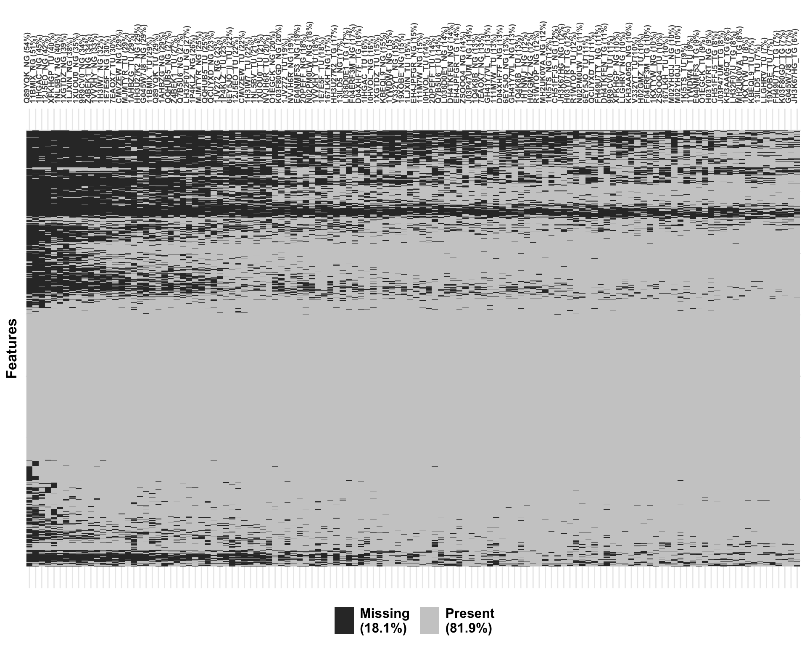

Preprocessing: DIA Proteomics of Discovery cohort
Qian-Wu Liao
Last updated: 2023-12-19
Checks: 6 1
Knit directory: SMART-CARE_LungCancer/
This reproducible R Markdown analysis was created with workflowr (version 1.7.0). The Checks tab describes the reproducibility checks that were applied when the results were created. The Past versions tab lists the development history.
Great! Since the R Markdown file has been committed to the Git repository, you know the exact version of the code that produced these results.
Great job! The global environment was empty. Objects defined in the global environment can affect the analysis in your R Markdown file in unknown ways. For reproduciblity it’s best to always run the code in an empty environment.
The command set.seed(20230425) was run prior to running
the code in the R Markdown file. Setting a seed ensures that any results
that rely on randomness, e.g. subsampling or permutations, are
reproducible.
Great job! Recording the operating system, R version, and package versions is critical for reproducibility.
Nice! There were no cached chunks for this analysis, so you can be confident that you successfully produced the results during this run.
Using absolute paths to the files within your workflowr project makes it difficult for you and others to run your code on a different machine. Change the absolute path(s) below to the suggested relative path(s) to make your code more reproducible.
| absolute | relative |
|---|---|
| /Users/qianwu/Desktop/SMART-CARE_LungCancer | . |
Great! You are using Git for version control. Tracking code development and connecting the code version to the results is critical for reproducibility.
The results in this page were generated with repository version 5f0dbc1. See the Past versions tab to see a history of the changes made to the R Markdown and HTML files.
Note that you need to be careful to ensure that all relevant files for
the analysis have been committed to Git prior to generating the results
(you can use wflow_publish or
wflow_git_commit). workflowr only checks the R Markdown
file, but you know if there are other scripts or data files that it
depends on. Below is the status of the Git repository when the results
were generated:
Ignored files:
Ignored: .DS_Store
Ignored: .RData
Ignored: .Rhistory
Ignored: analysis/.DS_Store
Ignored: code/.DS_Store
Ignored: data/.DS_Store
Ignored: output/.DS_Store
Untracked files:
Untracked: analysis/CrossCohort_investigation_EXP.Rmd
Untracked: analysis/feature_selection.Rmd
Untracked: code/archive/
Untracked: code/dataset_list.R
Untracked: code/workflowr_commands.R
Untracked: data/Discovery/
Untracked: data/MethodDev/
Untracked: data/aliquot_metadata.xlsx
Untracked: data/patient_metadata.xlsx
Untracked: data/sample_metadata.xlsx
Untracked: output/MethodDev/
Untracked: output/SC_meeting/
Note that any generated files, e.g. HTML, png, CSS, etc., are not included in this status report because it is ok for generated content to have uncommitted changes.
These are the previous versions of the repository in which changes were
made to the R Markdown
(analysis/Discovery_01_preprocessing_DIA.Rmd) and HTML
(docs/Discovery_01_preprocessing_DIA.html) files. If you’ve
configured a remote Git repository (see ?wflow_git_remote),
click on the hyperlinks in the table below to view the files as they
were in that past version.
| File | Version | Author | Date | Message |
|---|---|---|---|---|
| Rmd | 4e9331f | LiaoQianWu | 2023-12-12 | Combine discovery and method development data and do batch correction |
| html | d71a18f | LiaoQianWu | 2023-12-06 | Build site. |
| Rmd | e9ae795 | LiaoQianWu | 2023-12-05 | Update metadata |
| Rmd | bba1011 | LiaoQianWu | 2023-11-17 | Rearrange file locations and redo preprocessing of all method development datasets |
Description: Preprocess Discovery Tissue and Plasma DIA Proteomics generated by Karim Aljakouch from AG Krijgsveld, including data cleansing, filtering, and normalization (VSN). All needed information was then stored in SummarizedExperiment objects for further analyses.
Q: There is no ‘1HTNWJ_TU’ and got extra Tumor sample ‘6EY5JO_II_TU’?
Load libraries
library(readr)
library(readxl)
library(vsn)
library(limma)
library(visdat)
library(ggrepel)
library(SummarizedExperiment)
library(tidyverse)
# Load user-defined functions
source('./code/analysis_pipeline.R')
source('./code/misc.R')
# Set plot theme
th <- theme_bw(base_size = 15) +
theme(axis.title = element_text(face = 'bold'),
axis.text = element_text(face = 'bold'),
axis.ticks = element_line(linewidth = 0.8),
legend.text = element_text(size = 15))# Load sample metadata
smpMetadat <- readxl::read_excel('./data/sample_metadata.xlsx')
colnames(smpMetadat) <- smpMetadat[3,, drop = F]
smpMetadat <- dplyr::slice(smpMetadat, -c(1:3)) %>%
dplyr::select(c(Code, Parents, Visit, `Material submitted`, `Date and time of collection or surgery`,
`SMART-CARE cohort identifier`)) %>%
dplyr::rename(Sample = Code, Patient = Parents, TimePoint = Visit, SmpType = `Material submitted`,
Date = `Date and time of collection or surgery`, Cohort = `SMART-CARE cohort identifier`) %>%
dplyr::mutate(Sample = stringr::str_remove_all(Sample, '^SC_T_S_|^SC_DIS_S_|^SC_S_|_P'),
Patient = stringr::str_remove(Patient, '^/THRX_SPACE/THRX_DB/'),
TimePoint = dplyr::case_when(TimePoint == 'PRETHERAPEUTIC' ~ 'Baseline',
TimePoint == 'FOLLOW-UP' ~ 'Follow-up',
TimePoint == 'RECURRENCE' ~ 'Recurrence'),
SmpType = dplyr::case_when(SmpType == 'EDTA_PLASMA' ~ 'Plasma',
SmpType == 'FRESH_FROZEN_TISSUE' ~ 'Tissue'),
Condition = dplyr::case_when(grepl('_TU|TG', Sample) ~ 'Tumor',
grepl('_NG', Sample) ~ 'Normal',
!grepl('_TU|_NG', Sample) ~ TimePoint),
Date = stringr::str_extract(Date, '^\\d+-\\d+-\\d+'),
Cohort = dplyr::case_when(Cohort == 'DISCOVERY_COHORT' ~ 'Discovery',
Cohort == 'METHOD_DEVELOPMENT_COHORT' ~ 'MethodDev'),
Date = as.Date(Date, format = '%Y-%m-%d'))
# Load patient metadata
patientMetadat <- readxl::read_excel('./data/patient_metadata.xlsx')
colnames(patientMetadat) <- patientMetadat[3,, drop = F]
patientMetadat <- dplyr::slice(patientMetadat, -c(1:3)) %>%
dplyr::select(c(Code, Gender, `Age at diagnosis`, `Pathological stage`, `Smoking status`,
`Adjuvant chemotherapy`,)) %>%
dplyr::rename(Patient = Code, Age = `Age at diagnosis`, Stage = `Pathological stage`,
Smoking = `Smoking status`, Adjuvant = `Adjuvant chemotherapy`) %>%
dplyr::mutate(Gender = dplyr::case_when(Gender == 'MALE' ~ 'Male',
Gender == 'FEMALE' ~ 'Female'),
Smoking = dplyr::case_when(Smoking == 'SMOKER' ~ 'Smoker',
Smoking == 'EX-SMOKER' ~ 'Ex-smoker',
Smoking == 'NON-SMOKER' ~ 'Non-smoker'),
Adjuvant = dplyr::case_when(Adjuvant == 'true' ~ 'True',
Adjuvant == 'false' ~ 'False'),
Age = as.numeric(Age))
# Include patient recurrence information in patient metadata
recurPats <- dplyr::filter(smpMetadat, TimePoint == 'Recurrence') %>%
dplyr::pull(Patient)
patientMetadat <- dplyr::mutate(patientMetadat, Recurrence = dplyr::case_when(Patient %in% recurPats ~ 'Yes',
!Patient %in% recurPats ~ 'No'))
# Load aliquot metadata
aliquotMetadat <- readxl::read_excel('./data/aliquot_metadata.xlsx')
colnames(aliquotMetadat) <- aliquotMetadat[3,, drop = F]
aliquotMetadat <- dplyr::slice(aliquotMetadat, -c(1:3)) %>%
dplyr::select(Code, Parents, `Tumor Cell Content (%)`, `Cohort Identifier`, `Submission to`,
`Delivered?`) %>%
dplyr::rename(Aliquot = Code, Sample = Parents, TumorPurity = `Tumor Cell Content (%)`,
Cohort = `Cohort Identifier`, To = `Submission to`, Delivered = `Delivered?`) %>%
dplyr::mutate(Sample = stringr::str_remove_all(Sample, '^/THRX_SPACE/THRX_DB/SC_T_S_|_P'),
Sample = stringr::str_remove(Sample, '^/THRX_SPACE/THRX_DB/SC_DIS_S_'),
Sample = stringr::str_remove(Sample, '^/THRX_SPACE/THRX_DB/SC_S_'),
Sample = stringr::str_remove(Sample, '^/THRX_SPACE/THRX_DB/SC_DIS_'),
Cohort = dplyr::case_when(Cohort == 'method establishment' ~ 'MethodDev',
Cohort == 'DISCOVERY_COHORT' ~ 'Discovery'),
TumorPurity = as.numeric(TumorPurity)) %>%
dplyr::filter(To == 'KRIJGSVELD')
# Prepare tumor purity information
tumorPurityInfo <- dplyr::select(aliquotMetadat, Sample, TumorPurity)
# Combine all needed metadata
summMetadat <- dplyr::left_join(smpMetadat, patientMetadat, by = 'Patient') %>%
dplyr::left_join(tumorPurityInfo, by = 'Sample')
summMetadat4methodDev <- dplyr::select(aliquotMetadat, Aliquot, Sample, TumorPurity) %>%
dplyr::left_join(smpMetadat, by = 'Sample') %>%
dplyr::left_join(patientMetadat, by = 'Patient')
# List sample annotations to keep in SE objects
smpAnno <- c('Patient', 'SmpType', 'TimePoint', 'Date', 'Cohort', 'Condition',
'Recurrence', 'Gender', 'Age', 'Smoking', 'Stage', 'Adjuvant')Tissue Proteomics
Discovery cohort
# Load unprocessed data
proTissueTab <- readr::read_tsv('./data/Discovery/AG_Krijgsveld/20230815_MarcS_Discovery_Tissue.pg_matrix.tsv') %>%
dplyr::select(-c(Protein.Ids, First.Protein.Description)) %>%
tidyr::pivot_longer(cols = -c('Protein.Group', 'Protein.Names', 'Genes'),
names_to = 'Sample', values_to = 'Abundance') %>%
dplyr::mutate(Protein.Names = stringr::str_remove_all(Protein.Names, '_HUMAN'),
Sample = stringr::str_remove_all(Sample, '^.+SC_A_|^.+SC_DIS_A_|4\\.raw$'))
# Include summarized metadata
# Manually add an extra sample to summarized metadata
tmp_summMetadat <- summMetadat
smp <- summMetadat[summMetadat$Sample == '6EY5JO_TU',]
smp[1, 1] <- '6EY5JO_II_TU'
tmp_summMetadat <- rbind(tmp_summMetadat, smp)
proTissueTab <- dplyr::left_join(proTissueTab, tmp_summMetadat, by = 'Sample')Show dimensions of original data (86 samples and 7986 features)
# Preprocess data
proTissue <- doPreprocessing(proTissueTab, feat = 'Protein.Group', smp = 'Sample',
val = 'Abundance', featAnno = c('Protein.Names', 'Genes'),
smpAnno = c(smpAnno, 'TumorPurity'), do_featFilt = T,
cutoff = 0.5, viz_miss = T)#, save_path = './data/Discovery/AG_Krijgsveld/proTissue')
dim(proTissue$ori.data)[1] 7986 86Show missingness of original data
proTissue$ori.data.miss +
theme(axis.text.x = element_text(size = 10))
| Version | Author | Date |
|---|---|---|
| d71a18f | LiaoQianWu | 2023-12-06 |
Show distribution of original data
proTissue$ori.data.dist +
theme(axis.text.x = element_text(size = 10))
| Version | Author | Date |
|---|---|---|
| d71a18f | LiaoQianWu | 2023-12-06 |
Remove features quantified in less than 1/2 of
samples
Show dimensions of filtered data (86 samples and 6077 features)
dim(proTissue$filt.data)[1] 6077 86Show missingness of filtered data
proTissue$filt.data.miss +
theme(axis.text.x = element_text(size = 10))
| Version | Author | Date |
|---|---|---|
| d71a18f | LiaoQianWu | 2023-12-06 |
Normalize filtered data by VSN
Show distribution of vsn normalized data
proTissue$vsn.data.dist +
theme(axis.text.x = element_text(size = 10))
| Version | Author | Date |
|---|---|---|
| d71a18f | LiaoQianWu | 2023-12-06 |
Show feature mean-variance relationship of vsn normalized data
proTissue$vsn.feat.mean.var
| Version | Author | Date |
|---|---|---|
| d71a18f | LiaoQianWu | 2023-12-06 |
Do metadata-assisted quality control
# Do single-omics analysis
proTissueSOA <- doSOA(proTissue$vsn.data, meta_var = 'Condition', pca_method = 'ppca',
do_onlyPCA = T)
# Prepare labels for samples of interest
pcTab <- proTissueSOA$pcTab %>%
dplyr::mutate(Label = dplyr::case_when(Sample %in% c('I0HVOL_TU', '7EAOX7_TU',
'MJMTYR_TU', 'XFKHGP_TU',
'XFKHGP_NG', 'MJMTYR_NG',
'I0HVOL_NG', '7EAOX7_NG') ~ Sample))
ggplot(pcTab, aes(x=Condition, y=`PC1 (31.5%)`, col=Condition, fill=Condition, label=Label)) +
geom_boxplot(alpha = 0.7, outlier.shape = NA) +
geom_jitter(position = position_jitter(0.3), size = 3, show.legend = F) +
geom_text_repel(show.legend = F, size = 5) +
scale_color_brewer(palette = 'Dark2') +
scale_fill_brewer(palette = 'Dark2') +
labs(x = 'Sample condition') +
th #+ theme(axis.title = element_text(size = 28),
| Version | Author | Date |
|---|---|---|
| d71a18f | LiaoQianWu | 2023-12-06 |
# axis.text.x = element_text(size = 24), axis.text.y = element_text(size = 18),
# legend.title = element_text(size = 26), legend.text = element_text(size = 24))
# ggsave('./output/group_meeting/quality_control_proTissue_Krij.png', device = 'png', dpi = 400, height = 8, width = 10)=> Tumor purity: I0HVOL_TU - 87% / 7EAOX7_TU - 70% / MJMTYR_TU -
40% / XFKHGP_TU - 100%
(Mean of sample tumor cell contents is 74%, ranging from 40% to
100%.)
Combined data
Combine Discovery and Method Development cohorts
# Prepare long data containing original data and needed information
# Discovery
# Load original data
proTissueTab_Discovery <- readr::read_tsv('./data/Discovery/AG_Krijgsveld/20230815_MarcS_Discovery_Tissue.pg_matrix.tsv') %>%
dplyr::select(-c(Protein.Ids, First.Protein.Description)) %>%
tidyr::pivot_longer(cols = -c('Protein.Group', 'Protein.Names', 'Genes'),
names_to = 'Sample', values_to = 'Abundance') %>%
dplyr::mutate(Protein.Names = stringr::str_remove_all(Protein.Names, '_HUMAN'),
Sample = stringr::str_remove_all(Sample, '^.+SC_A_|^.+SC_DIS_A_|4\\.raw$'))
# Include summarized metadata
# Manually add an extra sample to summarized metadata
tmp_summMetadat <- summMetadat
smp <- summMetadat[summMetadat$Sample == '6EY5JO_TU',]
smp[1, 1] <- '6EY5JO_II_TU'
tmp_summMetadat <- rbind(tmp_summMetadat, smp)
proTissueTab_Discovery <- dplyr::left_join(proTissueTab_Discovery, tmp_summMetadat, by = 'Sample')
# MethodDev
# Load and tidy up original data and include summarized metadata into it
proTissueTab_MethodDev <- readr::read_delim('./data/MethodDev/AG_Krijgsveld/20230726_Thorax_Method_Est_tissue.txt') %>%
dplyr::select(-c(Protein.Ids, First.Protein.Description)) %>%
tidyr::pivot_longer(cols = -c('Protein.Group', 'Protein.Names', 'Genes'),
names_to = 'Aliquot',
values_to = 'Abundance') %>%
dplyr::mutate(Protein.Names = stringr::str_remove_all(Protein.Names, '_HUMAN'),
Aliquot = stringr::str_remove_all(Aliquot, '\\.raw$')) %>%
dplyr::left_join(summMetadat4methodDev, by = 'Aliquot') %>%
dplyr::select(-Aliquot)
# Extract common features for combining data
featSpace_Discovery <- unique(proTissueTab_Discovery$Protein.Group)
featSpace_MethodDev <- unique(proTissueTab_MethodDev$Protein.Group)
cmnFeats <- intersect(featSpace_Discovery, featSpace_MethodDev)
# Filter common features
proTissueTab_Discovery <- dplyr::filter(proTissueTab_Discovery, Protein.Group %in% cmnFeats)
proTissueTab_MethodDev <- dplyr::filter(proTissueTab_MethodDev, Protein.Group %in% cmnFeats)
# Combine data
proTissueTab_Combined <- dplyr::bind_rows(proTissueTab_Discovery, proTissueTab_MethodDev)
# Preprocess data
proTissue_Combined <- doPreprocessing(proTissueTab_Combined, feat = 'Protein.Group', smp = 'Sample',
val = 'Abundance', featAnno = c('Protein.Names', 'Genes'),
smpAnno = c(smpAnno, 'TumorPurity'), do_featFilt = T,
cutoff = 0.5, viz_miss = T)#, save_path = './data/Discovery/AG_Krijgsveld/combined_proTissue')Show dimensions of original combined data (126 samples and 7091 common features)
dim(proTissue_Combined$ori.data)[1] 7091 126Show missingness of original combined data
proTissue_Combined$ori.data.miss +
theme(axis.text.x = element_text(size = 7))
Show distribution of original combined data
# Convert SE object into long data
longData <- summExp2df(proTissue_Combined$ori.data, row_id = 'Protein.Group', col_id = 'Sample')
# Order samples based on cohorts so that same cohorts are clustered in plot
smpLevels <- dplyr::arrange(longData, Cohort) %>%
dplyr::filter(!duplicated(Sample)) %>%
dplyr::pull(Sample)
longData <- dplyr::mutate(longData, Sample = factor(Sample, levels = smpLevels))
ggplot(longData, aes(x=Sample, y=Value, col=Cohort)) +
geom_boxplot(outlier.size = 0.8) +
scale_color_brewer(palette = 'Set2') +
scale_y_log10() +
labs(y = 'Abundance') +
th + theme(axis.text.x = element_blank(), axis.ticks.x = element_blank())
Remove features quantified in less than 1/2 of
samples
Show dimensions of filtered data (126 samples and 6126 features)
dim(proTissue_Combined$filt.data)[1] 6126 126Show missingness of filtered data
proTissue_Combined$filt.data.miss +
theme(axis.text.x = element_text(size = 7))
| Version | Author | Date |
|---|---|---|
| d71a18f | LiaoQianWu | 2023-12-06 |
Normalize filtered data by VSN
Show distribution of vsn normalized data
# Convert SE object into long data
longData <- summExp2df(proTissue_Combined$vsn.data, row_id = 'Protein.Group', col_id = 'Sample')
# Order samples based on cohorts so that same cohorts are clustered in plot
smpLevels <- dplyr::arrange(longData, Cohort) %>%
dplyr::filter(!duplicated(Sample)) %>%
dplyr::pull(Sample)
longData <- dplyr::mutate(longData, Sample = factor(Sample, levels = smpLevels))
ggplot(longData, aes(x=Sample, y=Value, col=Cohort)) +
geom_boxplot(outlier.size = 0.8) +
scale_color_brewer(palette = 'Set2') +
labs(y = 'Abundance') +
th + theme(axis.text.x = element_blank(), axis.ticks.x = element_blank())Show feature mean-variance relationship of vsn normalized data
proTissue_Combined$vsn.feat.mean.var
| Version | Author | Date |
|---|---|---|
| d71a18f | LiaoQianWu | 2023-12-06 |
Do metadata-assisted quality control
Show significant associations between PCs and sample conditions and data
cohorts
# Do single-omics analysis
proTissueSOA_Combined <- doSOA(proTissue_Combined$vsn.data, meta_var = c('Condition', 'Cohort'),
pca_method = 'ppca', do_onlyPCA = T)
proTissueSOA_Combined$pcSigAssoRes Var1 Var2 pVal pValAdj Stat Test
1 PC1 (34%) Cohort 2.03e-80 8.11e-79 46.60 T-test
2 PC2 (24.9%) Condition 2.74e-44 5.48e-43 21.80 T-test
3 PC2 (24.9%) Cohort 1.47e-02 1.96e-01 -2.47 T-test
4 PC1 (34%) Condition 2.91e-02 2.91e-01 2.21 T-testVisualize significant PCs
pcTab <- proTissueSOA_Combined$pcTab
ggplot(pcTab, aes(x=`PC1 (34%)`, y=`PC2 (24.9%)`, col=Cohort, shape=Condition)) +
geom_point(size = 4) +
scale_color_brewer(palette = 'Set2') +
scale_shape_manual(values = c(0, 16)) +
th
| Version | Author | Date |
|---|---|---|
| d71a18f | LiaoQianWu | 2023-12-06 |
# ggplot(pcTab, aes(x=Condition, y=`PC1 (34%)`, col=Condition, fill=Condition)) +
# geom_boxplot(alpha = 0.7, outlier.shape = NA) +
# geom_jitter(position = position_jitter(0.3), size = 3, show.legend = F) +
# scale_color_brewer(palette = 'Dark2') +
# scale_fill_brewer(palette = 'Dark2') +
# ggpubr::stat_compare_means(method = 't.test', paired = F,
# method.args = list(var.equal = T),
# size = 6, show.legend = F) +
# thDo batch correction using limma
There is no PC significantly associated with data cohorts after batch
correction, which supports that batch effects are linear. Batch factor
(Cohort) should be included in linear model for statistical
analysis.
# Perform batch correction to see if two cohorts can be merged
# Convert SE object into wide data
datMat <- SummarizedExperiment::assay(proTissue_Combined$vsn.data)
# Define design matrix to keep particular effects, e.g., treatments
smpAnnoTab <- as_tibble(colData(proTissue_Combined$vsn.data), rownames = 'Sample')
design <- model.matrix(~ smpAnnoTab$Condition + smpAnnoTab$Recurrence)
# Do batch correction
datMat_BC <- limma::removeBatchEffect(datMat, batch = smpAnnoTab$Cohort, design = design)
proTissueSE_BC <- proTissue_Combined$vsn.data
assay(proTissueSE_BC) <- datMat_BC
# Save batch corrected data
# saveRDS(proTissueSE_BC, './data/Discovery/AG_Krijgsveld/combined_proTissueVsnBC.rds')
# Do single-omics analysis
proTissueSOA_BC <- doSOA(proTissueSE_BC, meta_var = c('Condition', 'Cohort'),
pca_method = 'ppca', do_onlyPCA = T)
proTissueSOA_BC$pcSigAssoRes Var1 Var2 pVal pValAdj Stat Test
1 PC1 (38%) Condition 6.55e-50 2.62e-48 -24.8 T-testVisualize PCs
pcTab <- proTissueSOA_BC$pcTab %>%
dplyr::mutate(Label = dplyr::case_when(Sample %in% c('I0HVOL_TU', '7EAOX7_TU',
'MJMTYR_TU', 'XFKHGP_TU',
'XFKHGP_NG', 'MJMTYR_NG',
'I0HVOL_NG', '7EAOX7_NG') ~ Sample))
ggplot(pcTab, aes(x=`PC1 (38%)`, y=`PC2 (9.2%)`, col=Cohort, shape=Condition)) +
geom_point(size = 4) +
scale_color_brewer(palette = 'Set2') +
scale_shape_manual(values = c(0, 16)) +
th
ggplot(pcTab, aes(x=Condition, y=`PC1 (38%)`, col=Condition, fill=Condition, label = Label)) +
geom_boxplot(alpha = 0.7, outlier.shape = NA) +
geom_jitter(position = position_jitter(0.3), size = 3, show.legend = F) +
geom_text_repel(show.legend = F, size = 5) +
scale_color_brewer(palette = 'Dark2') +
scale_fill_brewer(palette = 'Dark2') +
th => Tumor purity: I0HVOL_TU - 87% / 7EAOX7_TU - 70% / MJMTYR_TU - 40%
/ XFKHGP_TU - 100%
=> Tumor purity: I0HVOL_TU - 87% / 7EAOX7_TU - 70% / MJMTYR_TU - 40%
/ XFKHGP_TU - 100%
(Mean of sample tumor cell contents is 74%, ranging from 40% to
100%.)
Plasma Proteomics
Due to complexity of plasma samples, we will be focusing on analysis of Baseline samples. 63 out of 81 patients got Baseline samples and they were extracted and preprocessed to preserve maximal amounts of reliable features.
# Load unprocessed data
proPlasmaTab <- readr::read_tsv('./data/Discovery/AG_Krijgsveld/20230811_MarcS_Discovery_Plasma.pg_matrix.tsv') %>%
dplyr::select(-c(Protein.Ids, First.Protein.Description)) %>%
tidyr::pivot_longer(cols = -c('Protein.Group', 'Protein.Names', 'Genes'),
names_to = 'Sample', values_to = 'Abundance') %>%
dplyr::mutate(Protein.Names = stringr::str_remove_all(Protein.Names, '_HUMAN'),
Sample = stringr::str_remove_all(Sample, '^.+SC_DIS_A_|_4\\.raw$|\\.raw$|^.+KA_|_P'),
Sample = stringr::str_replace(Sample, 'P_', '_'),
Sample = stringr::str_remove(Sample, '^SC_A_'),
Sample = dplyr::case_when(Sample == 'FD01075852' ~ 'R1WTOP_V1',
Sample == 'FD05926483' ~ 'R1WTOP_V2',
Sample == 'FD01282286' ~ 'R1WTOP_V3',
Sample == 'FD07174643' ~ 'R1WTOP_V4',
!Sample %in% c('FD01075852', 'FD05926483',
'FD01282286', 'FD07174643') ~ Sample),
Sample = stringr::str_remove_all(Sample, '_FD\\d+|_LV\\d+'),
# Manually update sample names from data
Sample = dplyr::case_when(Sample == '1TK71I_V4' ~ '1TK71I_V3',
Sample == 'Y4W4L7_V2' ~ 'D1174FWT_V2',
!Sample %in% c('1TK71I_V4', 'Y4W4L7_V2') ~ Sample))
# Include summarized metadata
proPlasmaTab <- dplyr::left_join(proPlasmaTab, summMetadat, by = 'Sample')Explore time points and exact dates of plasma samples
# Explore time points of plasma samples
dplyr::select(proPlasmaTab, Sample, TimePoint, Date) %>%
dplyr::filter(!duplicated(Sample)) %>%
DT::datatable()# Visualize exact dates of plasma samples
tmp_proPlasmaTab <- dplyr::mutate(proPlasmaTab,
Label = dplyr::case_when(TimePoint == 'Baseline' ~ 'Baseline',
TimePoint != 'Baseline' ~ 'Follow-up'))
ggplot(tmp_proPlasmaTab, aes(x=Date, y=Patient, color=Label)) +
geom_point(size = 2) +
labs(title = 'Exact Dates') +
scale_x_date(date_breaks = 'year', date_labels = '%Y') +
scale_color_manual(name = 'Time Point', values = c('red2', 'grey40')) +
theme_minimal() +
theme(axis.title = element_text(size = 12, face = 'bold'),
axis.text.x = element_text(size = 10, angle = 60, vjust = 1, hjust = 1),
plot.title = element_text(size = 14, face = 'bold', hjust = 0.5),
legend.title = element_text(size = 12), legend.text = element_text(size = 10))
# theme(axis.title = element_text(size = 24, face = 'bold'),
# axis.text.x = element_text(size = 12, angle = 60, vjust = 1, hjust = 1),
# legend.title = element_text(size = 22), legend.text = element_text(size = 20))
# ggsave('./output/group_meeting/smp_dates_proPlasma_Krij.png', device = 'png', dpi = 400, height = 10, width = 12)Baseline samples
Show dimensions of original data (63 samples and 969 features)
# Subset certain samples
proBaseTab <- dplyr::filter(proPlasmaTab, Condition == 'Baseline')
# Preprocess data
proBase <- doPreprocessing(proBaseTab, feat = 'Protein.Group', smp = 'Sample',
val = 'Abundance', featAnno = c('Protein.Names', 'Genes'),
smpAnno = smpAnno, do_featFilt = T, cutoff = 0.5,
viz_miss = T, bins = 20)#, save_path = './data/Discovery/AG_Krijgsveld/proBase')
dim(proBase$ori.data)[1] 969 63Show missingness of original data
proBase$ori.data.miss +
theme(panel.grid.minor.y = element_blank())Show distribution of original data
proBase$ori.data.dist
Remove features quantified in less than 1/2 of
samples
Show dimensions of filtered data (63 samples and 613 features)
dim(proBase$filt.data)[1] 613 63Show missingness of filtered data
proBase$filt.data.missNormalize filtered data by VSN
Show distribution of vsn normalized data
proBase$vsn.data.dist
Show feature mean-variance relationship of vsn normalized data
proBase$vsn.feat.mean.var
sessionInfo()R version 4.3.0 (2023-04-21)
Platform: aarch64-apple-darwin20 (64-bit)
Running under: macOS Ventura 13.4
Matrix products: default
BLAS: /Library/Frameworks/R.framework/Versions/4.3-arm64/Resources/lib/libRblas.0.dylib
LAPACK: /Library/Frameworks/R.framework/Versions/4.3-arm64/Resources/lib/libRlapack.dylib; LAPACK version 3.11.0
locale:
[1] en_US.UTF-8/en_US.UTF-8/en_US.UTF-8/C/en_US.UTF-8/en_US.UTF-8
time zone: Europe/Warsaw
tzcode source: internal
attached base packages:
[1] stats4 stats graphics grDevices utils datasets methods
[8] base
other attached packages:
[1] proDA_1.14.0 pcaMethods_1.92.0
[3] pheatmap_1.0.12 ggplotify_0.1.2
[5] lubridate_1.9.2 forcats_1.0.0
[7] stringr_1.5.1 dplyr_1.1.4
[9] purrr_1.0.2 tidyr_1.3.0
[11] tibble_3.2.1 tidyverse_2.0.0
[13] SummarizedExperiment_1.30.2 GenomicRanges_1.52.0
[15] GenomeInfoDb_1.36.1 IRanges_2.34.1
[17] S4Vectors_0.38.1 MatrixGenerics_1.12.2
[19] matrixStats_1.0.0 ggrepel_0.9.4
[21] ggplot2_3.4.4 visdat_0.6.0
[23] limma_3.56.2 vsn_3.68.0
[25] Biobase_2.60.0 BiocGenerics_0.46.0
[27] readxl_1.4.3 readr_2.1.4
[29] workflowr_1.7.0
loaded via a namespace (and not attached):
[1] bitops_1.0-7 rlang_1.1.2 magrittr_2.0.3
[4] git2r_0.32.0 compiler_4.3.0 getPass_0.2-2
[7] callr_3.7.3 vctrs_0.6.5 pkgconfig_2.0.3
[10] crayon_1.5.2 fastmap_1.1.1 ellipsis_0.3.2
[13] backports_1.4.1 XVector_0.40.0 labeling_0.4.3
[16] utf8_1.2.4 promises_1.2.0.1 rmarkdown_2.23
[19] tzdb_0.4.0 ps_1.7.5 preprocessCore_1.62.1
[22] bit_4.0.5 xfun_0.39 zlibbioc_1.46.0
[25] cachem_1.0.8 jsonlite_1.8.7 highr_0.10
[28] later_1.3.1 DelayedArray_0.26.6 broom_1.0.5
[31] parallel_4.3.0 R6_2.5.1 bslib_0.5.0
[34] stringi_1.8.2 RColorBrewer_1.1-3 car_3.1-2
[37] jquerylib_0.1.4 cellranger_1.1.0 Rcpp_1.0.11
[40] knitr_1.43 httpuv_1.6.11 Matrix_1.6-0
[43] timechange_0.2.0 tidyselect_1.2.0 abind_1.4-5
[46] rstudioapi_0.15.0 yaml_2.3.7 affy_1.78.1
[49] processx_3.8.2 lattice_0.21-8 withr_2.5.2
[52] evaluate_0.21 gridGraphics_0.5-1 ggpubr_0.6.0
[55] pillar_1.9.0 affyio_1.70.0 BiocManager_1.30.22
[58] carData_3.0-5 whisker_0.4.1 DT_0.28
[61] generics_0.1.3 vroom_1.6.3 rprojroot_2.0.3
[64] RCurl_1.98-1.12 hms_1.1.3 munsell_0.5.0
[67] scales_1.3.0 glue_1.6.2 tools_4.3.0
[70] hexbin_1.28.3 ggsignif_0.6.4 fs_1.6.2
[73] grid_4.3.0 crosstalk_1.2.0 colorspace_2.1-0
[76] GenomeInfoDbData_1.2.10 cli_3.6.1 fansi_1.0.5
[79] S4Arrays_1.0.4 gtable_0.3.4 rstatix_0.7.2
[82] yulab.utils_0.0.6 sass_0.4.7 digest_0.6.33
[85] htmlwidgets_1.6.2 farver_2.1.1 htmltools_0.5.5
[88] lifecycle_1.0.4 httr_1.4.6 bit64_4.0.5